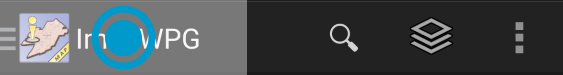
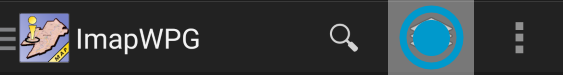
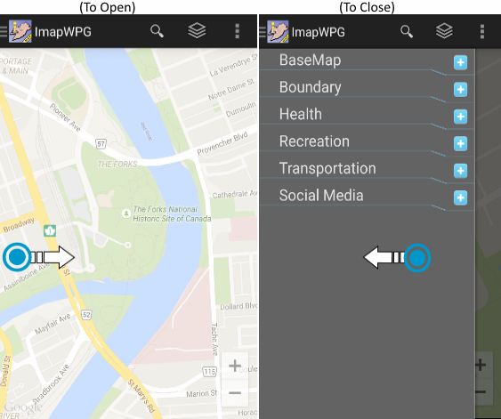

Feature Drawer:
Feature drawer is one of the most important component of this application. It is used to load or unload features on the map. All features have been organized by categories. To select a feature, you would need to expand its corresponding category then, select or de-selected the desired feature.
Three ways of opening or closing the feature drawer:
1. Tap the application title at the top left screen.

2. Tap the layer button on the action bar.

3. Swipe from left edge of the screen towards the center to open. Swipe from center to left edge of the screen to close.
